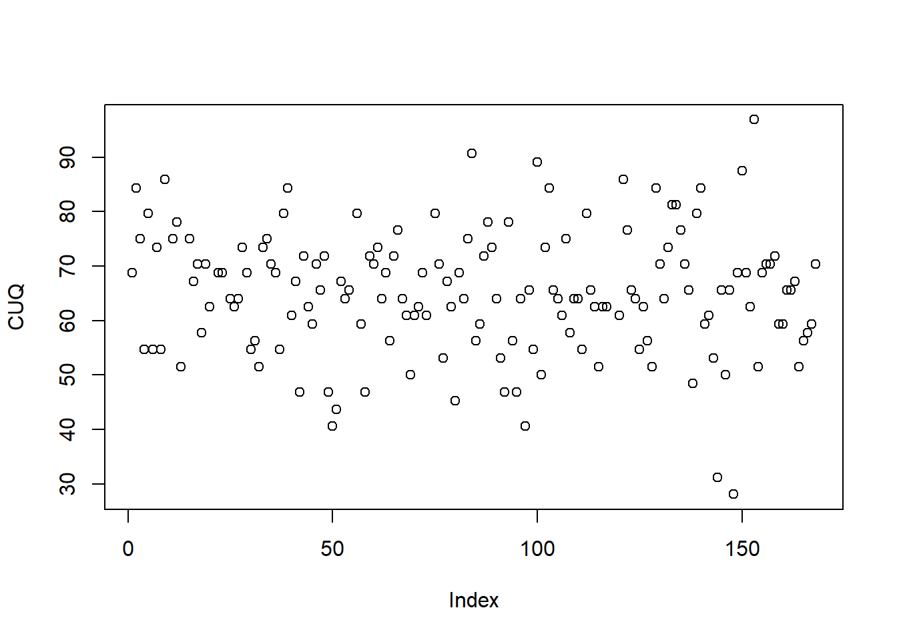
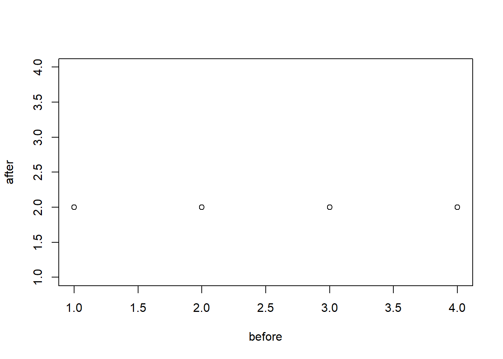

2 Results
Most learners use books or online books as resources. Of course, they may use multiple sources however they were asked to note the primary source. Only 6 stated their primary sources were Online videos/interactive materials which includes such tools as chatbots.
| CurrentMaterials | n |
|---|---|
| 1 to 1 workshops or lectures | 2 |
| Books | 21 |
| Online journals/books | 13 |
| Online videos/interactive material | 6 |
This can be supported when asked the amount of time participants have used a chatbot- in any form or subject: 23 stated they had never used a chatbot, being educational or not. 2 individuals had spent what would be extensive time with usage- these were the Learning Technologist and Mature Student.
| Previous_Chatbot_Usage | n |
|---|---|
| 1-4 hours | 15 |
| 10-19 hours | 1 |
| 20+ hours | 1 |
| 5-9 hours | 2 |
| Never | 23 |
2.1 Chatbot Usabilty Questionanire (CUQ)
2.1.1 CUQ Calcuation tool
The CUQ was developed by researchers at Ulster University (see) {<a href=“https://www.ulster.ac.uk/research/topic/computer-science/artificial-intelligence/projects/cuq” } and as the calculation can be complex a dedicated calculation tool has been created.
Please download the CEPEH CUQ calculation tool which has all of the data entered, so you can see the CEPEH CUQ scoring.
click here to download CUQ calc tool
click here to download CUQ score image

(#fig:cuq image)A marvel-lous meme
We refer to this image with \@ref(fig:cuq image).
So Figure @ref(fig:cuq image) is this image.
The score for all 3 chatbots grouped was 65.2/100, This scoring system was designed to be comparable to SUS and may be freely used alongside it, or in combination with other usability metrics. There has been evidence of correlation of 76% between the CUQ and SUS therefore we expect the SUS scored to be between 48.75 and 81%. We believe the CUQ has more validity towards measuring the concepts of interest on this study.
2.2 System Usability Scale (SUS) Scores
Note= The amount of ‘agreement’ is defined as the addition of ‘Agree’ and ‘Strongly agree’ responses.
The SUS score should consist of 10 items. However, some SUS questions were improved upon by 1 or more CUQ questions, specifically to this Chatbot study. The SUS results would be overshadowed by the CUQ scores, expect 2 that did not have cross-over. The two questions were:
- I would like to use the CEPEH chatbot I tested, more frequently (SUS1)(post)
- I felt confident using the CEPEH chatbot (SUS2)(post)
This meant the score of the SUS was not created, however the CUQ score better represented the Learners’ perceptions of the CEPEH chatbot in terms of feasibility of reuse and acceptability in healthcare curricula.
## KeepUsing Confident V1
## 9 Neutral Disagree 1
## 13 Strongly Agree Not Applicable 1
## 15 Strongly Disagree Agree 1
## 16 Strongly Disagree Strongly Agree 1
## 11 Not Applicable Not Applicable 3
## 7 Disagree Neutral 4
## 2 Agree Disagree 5
## 6 Disagree Disagree 5
## 4 Agree Strongly Agree 6
## 5 Disagree Agree 6
## 10 Neutral Neutral 6
## 8 Neutral Agree 10
## 12 Strongly Agree Agree 10
## 3 Agree Neutral 11
## 14 Strongly Agree Strongly Agree 12
## 1 Agree Agree 44## Keep_Using_Chatbots Confident Count
## 9 Neutral Disagree 1
## 13 Strongly Agree Not Applicable 1
## 15 Strongly Disagree Agree 1
## 16 Strongly Disagree Strongly Agree 1
## 11 Not Applicable Not Applicable 3
## 7 Disagree Neutral 4
## 2 Agree Disagree 5
## 6 Disagree Disagree 5
## 4 Agree Strongly Agree 6
## 5 Disagree Agree 6
## 10 Neutral Neutral 6
## 8 Neutral Agree 10
## 12 Strongly Agree Agree 10
## 3 Agree Neutral 11
## 14 Strongly Agree Strongly Agree 12
## 1 Agree Agree 44| Keep_Using_Chatbots | Confident | Count |
|---|---|---|
| Agree | Agree | 44 |
| Agree | Disagree | 5 |
| Agree | Neutral | 11 |
| Agree | Strongly Agree | 6 |
| Disagree | Agree | 6 |
| Disagree | Disagree | 5 |
| Disagree | Neutral | 4 |
| Neutral | Agree | 10 |
| Neutral | Disagree | 1 |
| Neutral | Neutral | 6 |
| Not Applicable | Not Applicable | 3 |
| Strongly Agree | Agree | 10 |
| Strongly Agree | Not Applicable | 1 |
| Strongly Agree | Strongly Agree | 12 |
| Strongly Disagree | Agree | 1 |
| Strongly Disagree | Strongly Agree | 1 |
2.3 Technology Acceptance Model
The TAM had 3 sections (Ease of Use, Perceived Usefulness, and Intention of Use). Ease of Use results showed significant increases in Users’ usage with each Chatbot. Perceived Usefulness: There were not significant findings for the Perceived usefulness. The justification for this may be due to being early versions of applications with limited functionality and functions which can be difficult for user to experience the intended further range of features and learning exercises.
Intention of Use: For users’ intentions to use within their course, the result of the Mann-Whitney U test was not significant, U = , z = , p = . in their intentions before use (m=xx, mode=xx) compared to after (m=xx, mode=x), however there was improvement therefore the chatbots may have more benefit than expected by students.
2.3.1 Other Findings
Other questions
I intend to continue using chatbots in the future (BI1)
The chatbot provided the information I needed with minimal commands
My knowledge of the topic improved after i had used the Chatbot
My confidence in understanding the topic improved after I had used the Chatbot
The chatbot provided me with the type of response i expected from asking a tutor/lecturer
The information provided was reliable
The chatbot has a high level of trustworthiness
The duration of conversations to find my answer was too long
The videos/images provided were useful to my questions
The chatbot exceeded my expectation of how it could help me
The chatbot exceeded my expectation of how it could engage with me
I think this learning method could help me to acquire knowledge
I would use this tool again as it has some value to me
I think i will actively use this learning method
I believe i had some choice about learning during chatbot use
I would trust the chatbot to provide me with information for my course
One piece of knowledge i learned from the chatbot was..
Repeated Measures t-test, aka paired t-test (before and after measurements)
## [1] "Sex"
## [2] "before"
## [3] "after"
## [4] "Code"
## [5] "Location"
## [6] "Profession"
## [7] "CurrentMaterials"
## [8] "Previous_Chatbot_Usage"
## [9] "Use chatbots frequently (pre)"
## [10] "...10"
## [11] "I find chatbots can be useful in my daily life (PE1)(pre)"
## [12] "Using chatbots increases my chances of achieving things that are important to me (PE2)(pre)"
## [13] "Using chatbots can help me accomplish things more quickly (PE3)(pre)"
## [14] "Using chatbots increases my productivity (PE4)(pre)"
## [15] "Learning how to use chatbots is, or would be, for me (EE1)(pre)"
## [16] "My interactions with chatbots are clear and understandable (EE2)(pre)"
## [17] "I find chatbots easy to use (EE3)(pre)"
## [18] "It is easy for me to become skilful at using chatbots (EE4)(pre)"
## [19] "People who are important to me think that I should use chatbots (SI1)(pre)"
## [20] "People who influence my behaviour think that I should use chatbots (SI2)(pre)"
## [21] "People whose opinions that I value prefer that I use chatbots (SI3)(pre)"
## [22] "I have the resources necessary to use chatbots (FC1)(pre)"
## [23] "I have the knowledge necessary to use chatbots (FC2)(pre)"
## [24] "Chatbots are compatible with other technologies I use (FC3)(pre)"
## [25] "I can get help from others when I have difficulties using chatbots (FC3)(pre)"
## [26] "Using chatbots is enjoyable (HM2)(pre)"
## [27] "Using chatbots is very entertaining (HM3)(pre)"
## [28] "I intend to continue using chatbots in the future (BI1)(pre)"
## [29] "ChatbotUsed"
## [30] "The chatbot provided the information I needed with minimal commands(post)"
## [31] "My knowledge of the topic improved after i had used the Chatbot(post)"
## [32] "My confidence in understanding the topic improved after I had used the Chatbot(post)"
## [33] "The chatbot provided me with the type of response i expected from asking a tutor/lecturer(post)"
## [34] "The information provided was reliable (post)"
## [35] "The chatbots personality was realistic and engaging (CUQ1)(post)"
## [36] "The chatbot seemed too robotic (CUQ2)(post)"
## [37] "The chatbot was welcoming during initial setup (CUQ3)(post)"
## [38] "The chatbot seemed very unfriendly (CUQ4)(post)"
## [39] "The chatbot explained its scope and purpose well (CUQ5)(post)"
## [40] "The chatbot gave no indication as to its purpose (CUQ6)(post)"
## [41] "The chatbot was easy to navigate (CUQ7)(post)"
## [42] "It would be easy to get confused when using the chatbot (CUQ8)(post)"
## [43] "The chatbot understood me well (CUQ9)(post)"
## [44] "The chatbot failed to recognise a lot of my inputs (CUQ10)(post)"
## [45] "Chatbot responses were useful, appropriate and informative (CUQ11)(post)"
## [46] "Chatbot responses were irrelevant (CUQ12)(post)"
## [47] "The chatbot coped well with any errors or mistakes (CUQ13)(post)"
## [48] "The chatbot seemed unable to handle any errors (CUQ14)(post)"
## [49] "The chatbot was very easy to use (CUQ15)(post)"
## [50] "The chatbot was very complex (CUQ16)(post)"
## [51] "I would like to use the CEPEH chatbot i tested, more frequently (SUS1)(post)"
## [52] "...52"
## [53] "...53"
## [54] "The chatbot has a high level of trustworthiness(post)"
## [55] "The duration of conversations to find my answer was too long(post)"
## [56] "I found the CEPEH chatbots useful in my daily life (PE1)(post)"
## [57] "Using CEPEH chatbots increases my chances of achieving things important to me (PE2)(post)"
## [58] "Using CEPEH chatbots can help me accomplish things more quickly (PE3)(post)"
## [59] "Using CEPEH chatbots increases my productivity (PE4)(post)"
## [60] "Learning how to use CEPEH chatbots is easy for me (EE1)(post)"
## [61] "My interaction with CEPEH chatbots is clear and understandable (EE2)(post)"
## [62] "I find CEPEH chatbots easy to use (EE3)(post)"
## [63] "It is easy for me to become skilful at using CEPEH chatbots (EE4)(post)"
## [64] "People who are important to me think that I should use CEPEH chatbots (SI1)(post)"
## [65] "People who influence my behaviour think that I should use CEPEH chatbots (SI2)(post)"
## [66] "People whose opinions that I value prefer that I use CEPEH chatbots (SI3)(post)"
## [67] "I have the resources necessary to use CEPEH chatbots (FC1)(post)"
## [68] "I have the knowledge necessary to use CEPEH chatbots (FC2)(post)"
## [69] "CEPEH Chatbots are compatible with other technologies I use (FC3)(post)"
## [70] "I can get help from others when I have difficulties using CEPEH chatbots (FC4)(post)"
## [71] "Using CEPEH chatbots is enjoyable (HM2)(post)"
## [72] "Intend"
## [73] "The videos/images provided were useful to my questions(post)"
## [74] "The chatbot exceeded my expectation of how it could help me(post)"
## [75] "The chatbot exceeded my expectation of how it could engage with me(post)"
## [76] "The chatbot exceeded my expectation of how entertaining it was to use(post)"
## [77] "I think this learning method could help me to acquire knowledge(post)"
## [78] "Reuse"
## [79] "I think i will actively use this learning method(post)"
## [80] "I believe i had some choice about learning during chatbot use(post)"
## [81] "I would trust the chatbot to provide me with information for my course(post)"
## [82] "Informed of results(post)"
## [83] "CUQ"## # A tibble: 168 × 3
## Sex before after
## <chr> <dbl> <dbl>
## 1 Female 2 2
## 2 Female 2 2
## 3 Female 2 2
## 4 Female 2 2
## 5 Female 2 2
## 6 Female 2 2
## 7 Female 2 2
## 8 Female 2 2
## 9 Female 2 2
## 10 Female 2 2
## # … with 158 more rows
##
## Paired t-test
##
## data: before and after
## t = -1.3109, df = 41, p-value = 0.1972
## alternative hypothesis: true mean difference is not equal to 0
## 9.5 percent confidence interval:
## -0.1819341 -0.1513992
## sample estimates:
## mean difference
## -0.1666667This t-test compares confident using mobile chatbots before and after CEPEH chatbot usage.